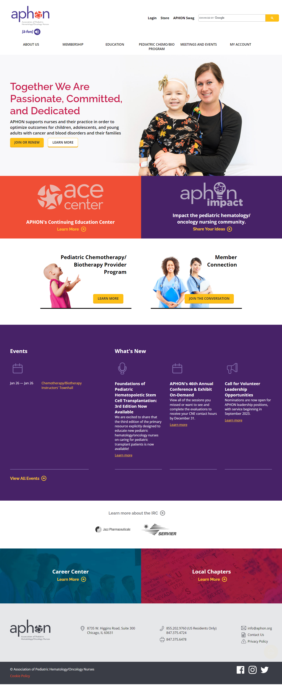
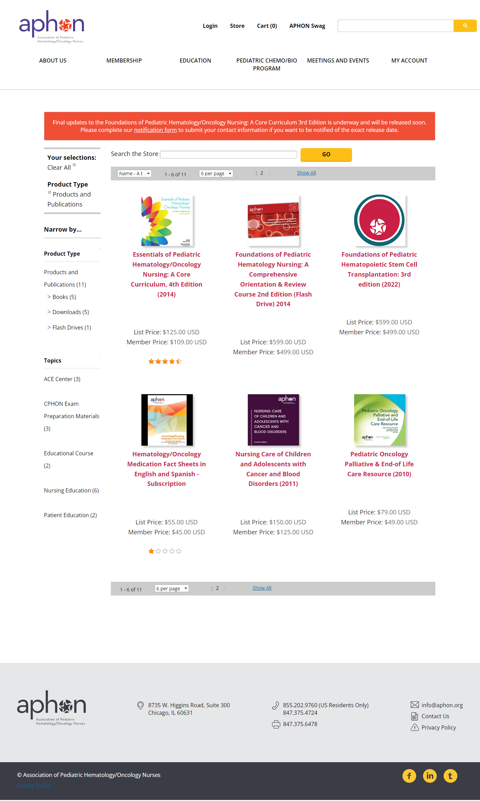
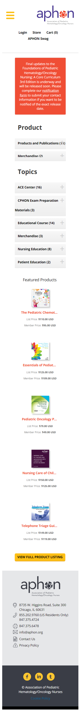

Redesigned the website for the Association of Pediatric Hematology/Oncology Nurses — rebuilding the information architecture around member needs, improving mobile access, and modernizing the store experience.


The Problem
Goals
Key Design Decisions
Reorganized the site's information architecture to lead with what members come to do — continuing education, membership management, event registration, and advocacy resources.
This required close collaboration with APHON stakeholders to understand how members actually used the site versus how the organization thought about itself.
Redesigned the APHON store to surface resources by Product Type, Topic, and Format — allowing nurses to filter to exactly what they need without browsing long lists.
Both list price and member price are shown on every product card — removing the friction of logging in just to see if a discount applies.
The desktop store's sidebar filters collapse into accordion-style mobile filters — keeping the full filtering power accessible without requiring horizontal space.
Nursing professionals often access resources from phones between patient interactions. The redesigned store works in that context without requiring a desktop session.

Results
Stakeholders and members responded positively to an IA that reflected how they actually work — leading with tasks rather than organizational structure.
Faceted filtering reduced the steps needed to find specific resources. Transparent pricing removed a friction point that previously required login to resolve.
The redesigned experience worked for nurses accessing resources from phones between patient interactions — a use case the original site didn't support.